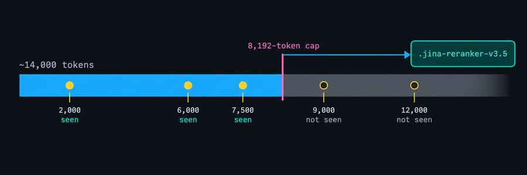
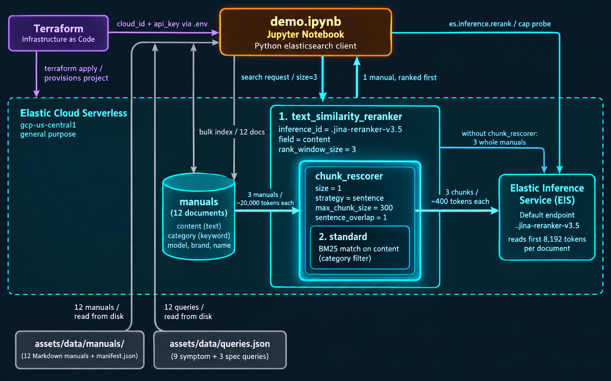
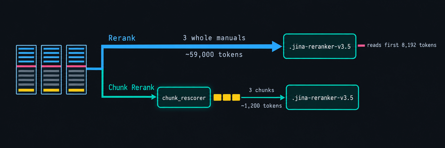
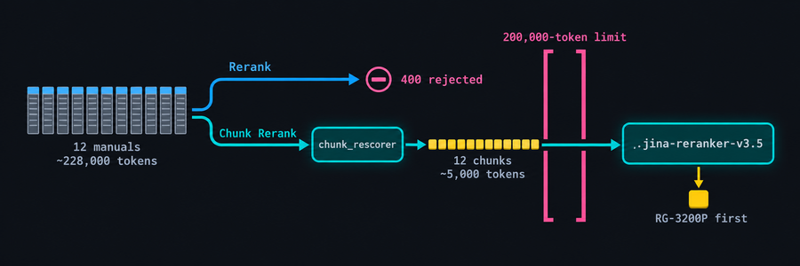
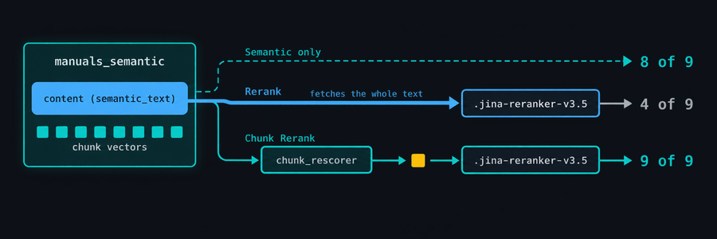
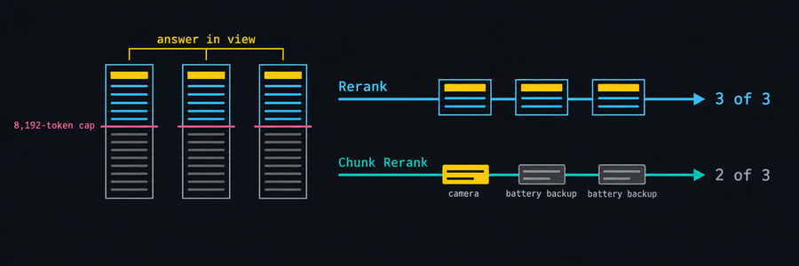

Elasticsearch · text_similarity_reranker · chunk_rescorer
Cross-encoder rerankers stop reading long documents part-way through. chunk_rescorer sends them the passage that matters instead.
A live demo on Elastic Cloud Serverless with the Elastic Inference Service and jina-reranker-v3.5
The problem

The demo

Two configurations, same query, same three manuals

{"text_similarity_reranker": {
"retriever": { standard: category filter + match on content },
"field": "content", "inference_id": ".jina-reranker-v3.5",
"inference_text": query, "rank_window_size": 3,
"chunk_rescorer": { "size": 1,
"chunking_settings": { "strategy": "sentence",
"max_chunk_size": 300, "sentence_overlap": 1 } }
}}
Nine symptom queries, three manuals each
| query | answer | Rerank | margin | ms | Chunk Rerank | margin | ms |
|---|---|---|---|---|---|---|---|
| pw-inlet-screen | RG-2600P | #1 | +0.09 | 1,716 | #1 | +0.43 | 121 |
| pw-weep-hole | RG-3200P | #1 | +0.03 | 1,736 | #1 | +0.57 | 113 |
| pw-milky-oil | RG-4000P | #3 | -0.06 | 1,763 | #1 | +0.64 | 116 |
| gdo-chain-sag | KG-800C | #2 | -0.25 | 1,844 | #1 | +0.37 | 120 |
| gdo-3-1-pattern | KG-1200B | #2 | -0.01 | 1,859 | #1 | +0.45 | 131 |
| gdo-camera-black | KG-1500W | #1 | +0.03 | 1,818 | #1 | +0.60 | 113 |
| gen-fuel-valve-detent | RG-4500E | #3 | -0.16 | 1,754 | #1 | +0.66 | 125 |
| gen-twistlock-breaker | RG-7500E | #3 | -0.11 | 1,732 | #1 | +0.04 | 130 |
| gen-propane-stall | RG-10000D | #1 | +0.42 | 1,967 | #1 | +0.56 | 116 |
| correct manual first | 4 of 9 | 1,763 | 9 of 9 | 120 |
Widen the window to the whole catalog

The obvious objection

The one caveat

Two places to chunk
Takeaways